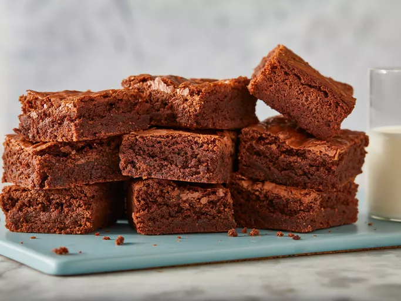

Brownies

Description
This recipe is about an easy to bake gooey chocolately fudgy brownies that everyone will enjoy.
Ingredients
- 1/2 cup of white sugar
- 2 tablespoons of brown butter
- 2 tablespoons of fresh brewed coffee
- 1 1/2 cups of semisweet chocolate chips
- 2 large eggs beaten
- 1/2 tablespoon of vanilla extract
- 2/3 cup of all-purpose flour
- 1/2 teaspoon of salt
- 1/4 teaspoon of baking soda
Steps
- Gather all ingredients.
- Preheat the oven to 325 degrees F (165 degrees C). Grease an 8-inch square pan.
- Combine sugar, butter, and water in a medium saucepan; cook and stir over medium heat until boiling. Remove from heat and stir in chocolate chips until melted and smooth; mix in eggs and vanilla. Combine flour, salt, and baking soda; stir into the chocolate mixture. Spread brownie batter evenly into the prepared pan.
- Bake in the preheated oven until top is dry and edges have started to pull away from the sides of the pan, about 20 to 30 minutes.
- Let cool completely before cutting into squares.
- Enjoy.